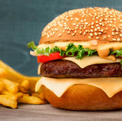
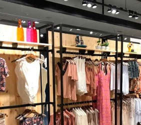
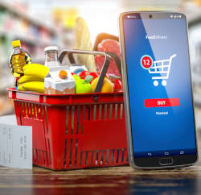

-

Hamburguer & cia
O Hamburguer & cia é uma plataforma de entrega de refeições e alimentos online. O Hamburguer & cia fazia originalmente parte do serviço de motorista do Uber, mas depois se tornou um aplicativo e um serviço autônomo. Apoiadora de diversas ações como projeto do Instituto Sou da Paz visa capacitar equipes técnicas responsáveis por acompanhar os adolescentes que cumprem medidas socioeducativas na comunidade de Brasilândia, em São Paulo.
-

Feel good
A feel good é uma rede de moda feminina e lingerie brasileira. Ficou conhecida por seu slogan
de Mulher pra Mulher
. A rede está presente em todas as regiões do Brasil e conta com aproximadamente 360 lojas nas ruas e shoppings do país, com ações que reforçam a missão e valor social da feel good no apoio para as mulheres envolvidas em situações de vulnerabilidade social. -

MG Supermarket
O MG supermarket foi eleito no ranking ABRAS 2022, como a 5ª maior rede de Supermercados do Brasil, além de ser uma grande incentivadora da cultura e do esporte, bem como apoiadora de importantes ações sociais. A maior supermercadista de MINAS GERAIS está totalmente centrada neste Estado, e possui forte presença em 75 cidades mineiras que integram o Colar Metropolitano de Belo Horizonte, a Região Norte e Sul de Minas e Campo das Vertentes.